Fukuchi
Fukuchi · Fukuoka
Fukuchi
Highlighted on the Fukuoka map.
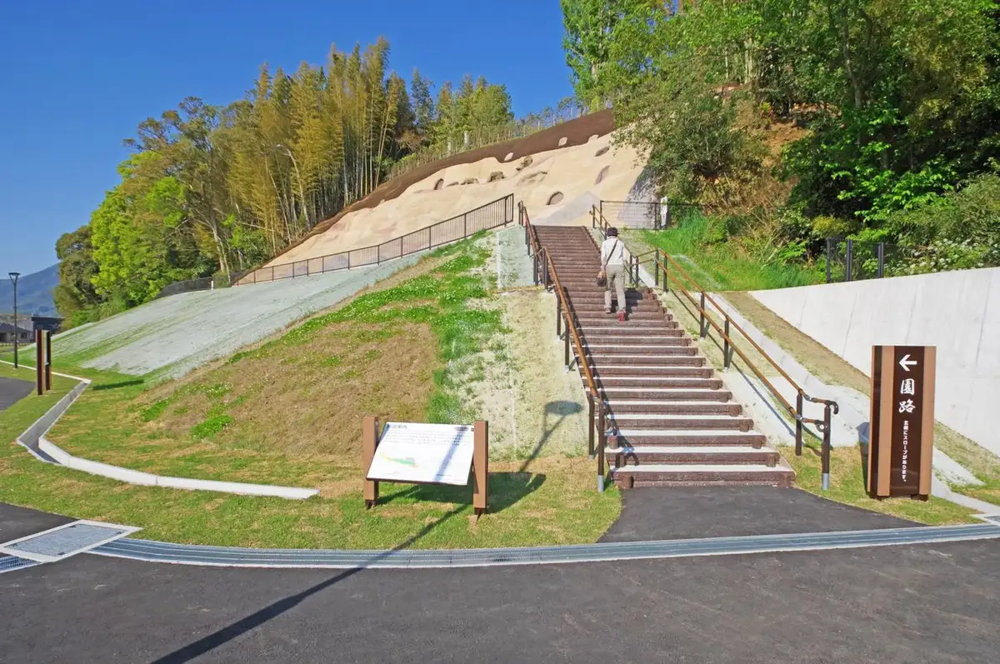
Dining
ラーメンまむし
Raamen Mamushi
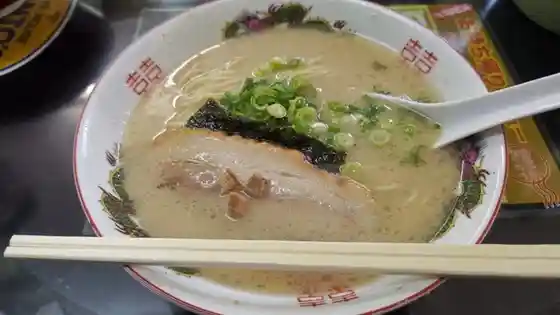
たのし家
Tanoshi Ie
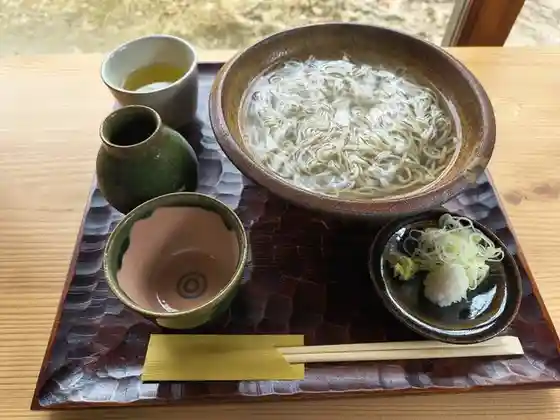
そば屋 こだるま
Soba Ya Kodaruma
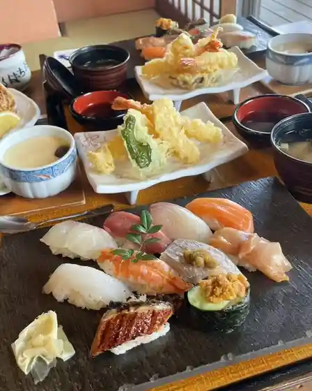
活魚寿司たちばな
Ikeuo Sushi Tachibana
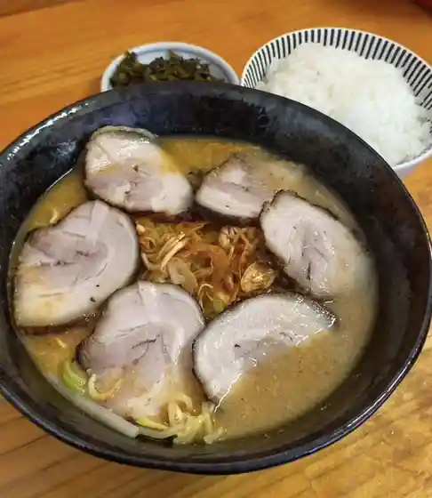
ラーメン大将
Raamen Taishou
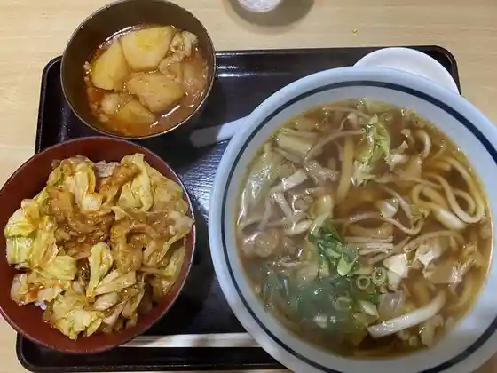
弁天
Benten
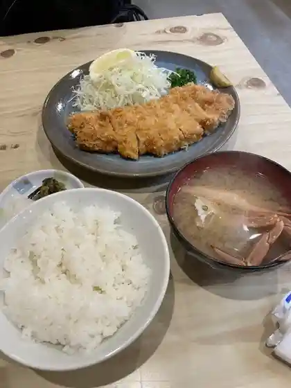
とんかつ・フライ専門店 蔵司
とんかつ・フライ専門店 蔵司
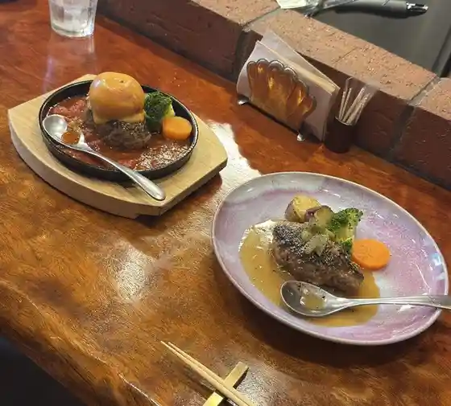
炭火・鉄板焼 ステーキ&ハンバーグ くずはら
炭火・鉄板焼 ステーキ&ハンバーグ くずはら
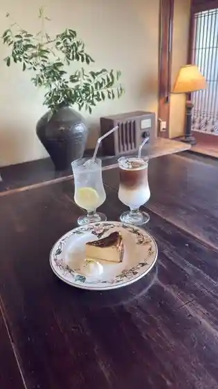
想い堂
Omoi Dou
味八 田川店
Aji Hachi Tagawa Mise
レストラン さくら
Resutoran Sakura
筑豊ラーメン 山小屋 ふじ湯の里店
Chikuhou Raamen Yamagoya Fuji Yu No Sato Mise
としょパン
Tosho Pan
ちびちび
Chibichibi
ひよちゃんち Crepe
Crepe
食事処信子
Shokuji Tokoro Nobuko
げんき畑
Genki Hatake
ビストロみな川
Bisutoro Mina Kawa
たんぽぽ亭
Tanpopo Tei
うどん処いこい
Udon Tokoro Ikoi
KITOKI 抹茶と和ごはん
KITOKI
CHOCORO FAM
CHOCORO FAM
ボタ山
Bota Yama
まちの小さなケーキ屋さん 四季菜
Machino Chiisa Na Keeki Ya San Shikisai
地どり焼 のむら丸
Chi Dori Yaki Nomura Maru
鶏無双 田川店
Niwatori Musou Tagawa Mise
いろり
Irori
太郎丸チキン
Taroumaru Chikin
肉肉うどん うどん処 森下商店
Niku Niku Udon Udon Tokoro Morishita Shouten
ふくぜん
Fukuzen
ふれあい食堂
Fureai Shokudo
猟師小家八十八
Ryoushi Koie Yasohachi
寿しあら川
Hisashi Shiara Kawa
中華料理 福来順 弁城店
Chuukaryouri Fukurai Jun Benjou Mise
こだわり食房 あが乃
Kodawari Shoku Bou Aga No
ふくちのやどかふぇ yori-toko
yori-toko
よろずや
Yorozuya
海鮮居酒屋 砂波
Kaisen Izakaya Suna Nami
方城特産館 ふくちの郷
Houjou Tokusan Kan Fukuchino Sato
立喰い生麺 金田店
Tachigui I Namamen Kaneda Mise
パン工房 拾伍
Pan Koubou Shuu Go
いろは
Iroha
もごもご
Mogomogo
竜月
Ryuu Gatsu
PAN HOLIC
PAN HOLIC
梅香園
Baikou Sono
上野の里ふれあい市
Ueno No Sato Fureai Shi
鉄板焼き カウボーイ
Teppanyaki Ki Kaubooi
お食事処 花みずき
O Shokuji Tokoro Hana Mizuki
福智ブランドファクトリー
Fukuchi Burandofakutorii
はなみずき
Hanamizuki
ゆうざき
Yuuzaki
ほうじょう温泉 ふじ湯の里
Houjou Onsen Fuji Yu No Sato
食味倶楽部藤
Shokumi Kurabu Fuji
とり松
Tori Matsu
豚肉工房うめちく
Butaniku Koubou Umechiku
ぢゞばゞ
ぢゞばゞ
レストラン コスモス
Resutoran Kosumosu
食べ飲み場 鉄板ベース
Tabe Nomi Ba Teppan Beesu
ちぃままのパン屋さん
Chiimamano Pan Ya San
お好み焼きビッグヒップ
O Konomi Yaki Bigguhippu
パスタハウス３７
Pasutahausu 37
天然たい焼き 茶蘭堂
Tennen Tai Yaki Cha Ran Dou
おやつや
Oyatsuya
なかよし食堂
Nakayoshi Shokudo
はうす２
Hausu 2
としちゃんうどん
Toshichan'udon
上野茶屋
Ueno Chaya
Ein 雑貨店
Ein
楽心堂本舗
Raku Kokoro Doumoto Ho
Cafe de choco
Cafe de choco
居酒屋 一歩
Izakaya Ippo
丸善
Maruzen
やきとり正ちゃん
Yakitori Sei Chan
木まぐれ
Ki Magure
＃酒趣
# Sake Omomuki
Katsugyo Zushi Tachibana
Katsugyo Zushi Tachibana
Shakariki
Shakariki
Ramen Mamushi
Ramen Mamushi
Restaurant Kobushi
Restaurant Kobushi
Bistro Minagawa
Bistro Minagawa
Pizza Cafe Genkibatake
Pizza Cafe Genkibatake
Uguisu Music School
Uguisu Music School
Karaoke Stage Tonchinkan
Karaoke Stage Tonchinkan
Mariko
Mariko
Ryoshigoya Yasohachi
Ryoshigoya Yasohachi
Izakaya Soko Soko
Izakaya Soko Soko
Takekichi
Takekichi
Japanese Restaurant Sakaki
Japanese Restaurant Sakaki
Karaoke Fukuchi
Karaoke Fukuchi
Yuzaki
Yuzaki
Ikenaga
Ikenaga
House 2
House 2
Drive In Narai
Drive In Narai
Sushi Arakawa
Sushi Arakawa
Suzume Nooyado
Suzume Nooyado
Aganochaya
Aganochaya
Baikaen
Baikaen
Kyomachi Ya
Kyomachi Ya
Chinese Restaurant Yueitei
Chinese Restaurant Yueitei
Izakaya Tomo
Izakaya Tomo
Okonomiyaki Bighip
Okonomiyaki Bighip
Okonomiyaki Miyo
Okonomiyaki Miyo
Restaurant Suiren
Restaurant Suiren
House Roast Coffee Store Coffee Sanka
House Roast Coffee Store Coffee Sanka
Sobadokoro Shin
Sobadokoro Shin
Ogano Onsen Restaurant Shiraito
Ogano Onsen Restaurant Shiraito
Snack Hagoromo
Snack Hagoromo
Yamagoya Hojo
Yamagoya Hojo
Tachigui Udon Kissyo
Tachigui Udon Kissyo
Taromaru Chicken
Taromaru Chicken
Jugo
Jugo
Tampopo
Tampopo
Sights
Shiroito Falls Fukuchi Yama Ueno Kyo (Fukuchi)
Heiseichikuhotetsudo
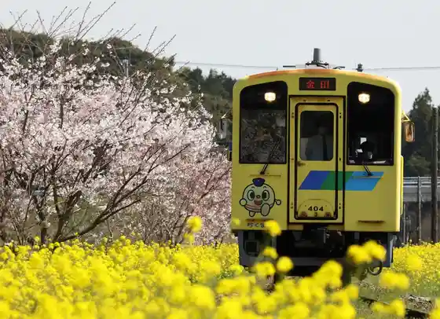
Tennen Onsen Nichio Baths
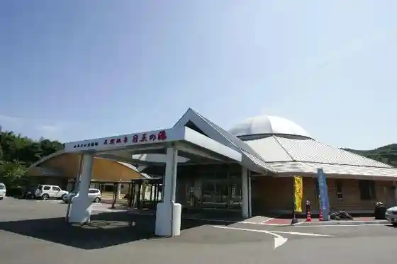
Fuji Yu Village
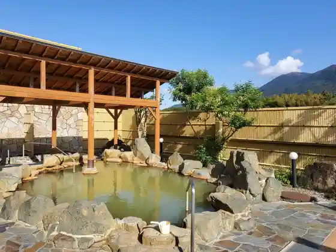
Fukuchi Yama
7 Sedai CAMP
Kokoku Tera
Ueno Yaki Kamamoto Shokai
Shiroyama Yokoana Gun
Ikata Burial Mound
Akasaka Shrine Shirahige Jinja Shinko Matsuri
Fukuchi Library History Museum (Fukuchi no Chi)
Kyushu Makuseru Aka Renga Memorial Museum
Ueno Village Fureai City
Bussan Kan Shu Go
Kobi Sakura
Kyoso no Niwa
Fukuchi no Sato
Sei no Kan